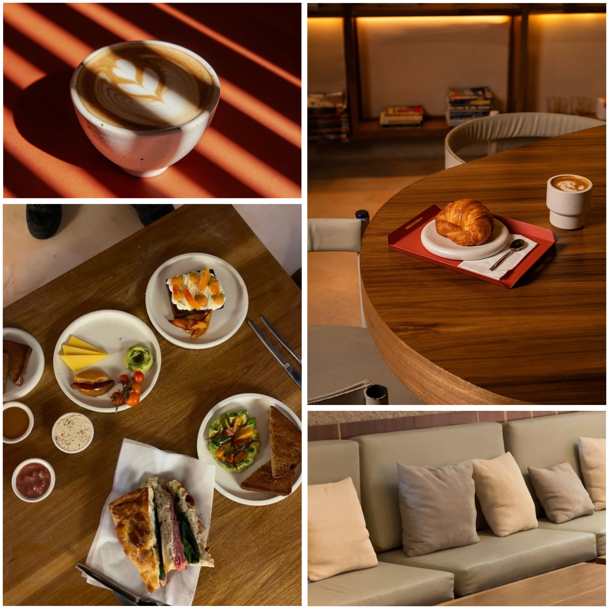

← Volver
SOSA Café

SOSA Café está ubicado en el barrio de Belgrano, al límite con Colegiales.
Se destaca por su arquitectura moderna y su estética increíble. El espacio es amplio, luminoso y con una propuesta visual muy cuidada.
Es súper tranquilo, con mesas grandes ideales para estudiar o trabajar sin interrupciones. Además, cuenta con enchufes cerca y un ambiente relajado que inspira concentración.
La carta ofrece platos excelentes para cualquier momento del día: desde desayunos y brunchs hasta meriendas completas.